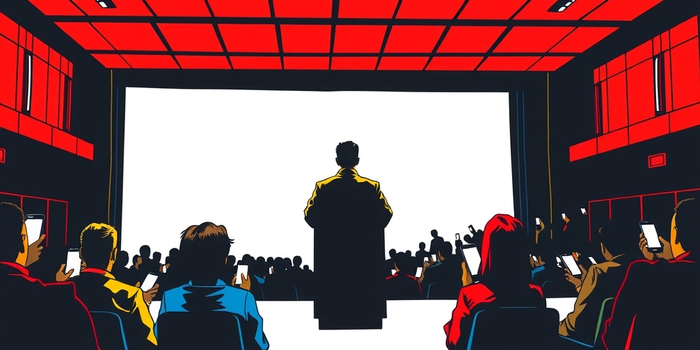
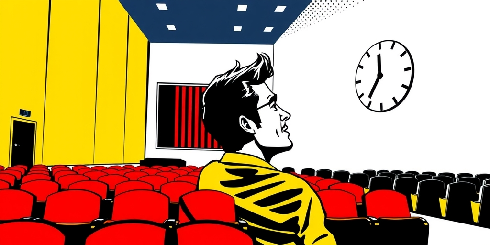
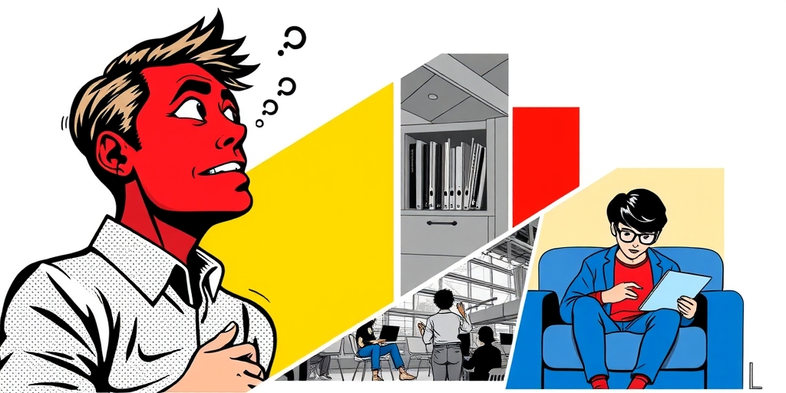
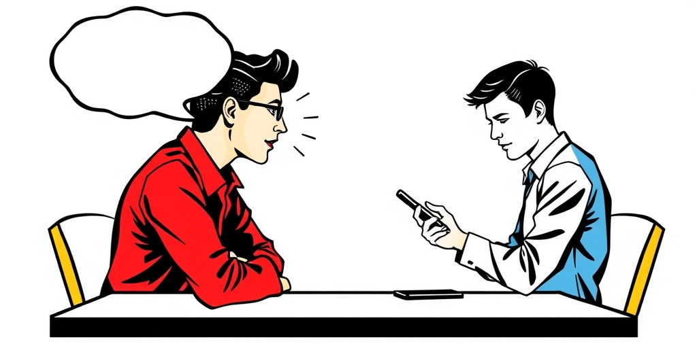

小汪老师的成长洞察 · 属于你的成长专栏
当张小龙站在人大的讲台上，他遭遇的不是诘问，不是掌声，而是一种近乎礼貌的真空。台下那些最聪明的头脑，选择用沉默完成了精神上的集体转身。这沉默不是尊重，是一种更彻底的告别。

张小龙在人大的演讲冷场了。这不是什么惊天动地的新闻。但比冷场更值得咀嚼的，是冷场的方式。没有学生站起来反驳他的观点，也没有人发出不满的嘘声。场子里弥漫着一种平静的、甚至有点疲惫的安静。
这种安静让演讲者感到不安。因为它不同于激烈的反对，反对至少证明你在对话。这种安静像一堵棉花墙，你所有的输出都被无声地吸收、消解，得不到任何真实的反馈。它意味着，你的观点对他们而言，不重要到不值得反驳。
这场景像极了许多现代关系：我们不吵架，不争辩，只是默默关掉了内心那台用于接收对方信号的雷达。礼貌成了隔绝真实的最后屏障。
有人为学生辩护：“他们低头看手机时脸上充满了光。”这句话很机智，像一枚漂亮的回旋镖，把“眼里没光”的指控扔了回去。但这里藏着一个精巧的偷换。
手机屏幕发出的光，是数据和算法投喂的、被动反射的光。它来自外部，照亮的是被设计好的情绪与欲望。而人们最初谈论的“光”，是一种主见被点燃、对世界充满探究欲的内生光芒。一种是被照亮，一种是去点燃。
用前者来掩盖后者的缺席，无异于说：你看，蜡烛虽灭，但屋顶开了天窗，月亮照进来也挺亮的。月亮再亮，也不是你自己的火种。这辩护回避了核心问题：为什么他们不再试图去点燃什么了？

另一个解释是：张小龙违反了演讲的潜规则。好的演讲是“心灵按摩”，要精准地号准听众的脉，讲他们想听的话。从这个角度看，他的“翻车”是技术性失误。
但这个解释本身更令人不安。如果“号准脉”成为公共表达的至高标准，那么演讲就彻底沦为一种取悦技术。讲者不断揣摩、迎合，听众只接纳被肯定的部分。这是一个双向奔赴的退化闭环。
长此以往，公共空间里将只剩下“舒适的观点”在流通。所有可能引发不适、需要动用思辨力的内容，都会被自动过滤。我们建造了一个光滑无比的回音壁，却误以为这是广阔的广场。

那么，名校生那股“虽千万人吾往矣”的质问冲动，究竟消失在哪里？这不是单一原因能解释的。
首先是风险计算的理性化。在一个极度强调“稳”的时代，公开表达异见的成本被无限放大，而收益却模糊不清。沉默，成了一种最经济的情绪管理策略。其次是认知的防御工事。长期暴露在信息洪流和价值撕裂中，人会发展出一种心理机制：不让新信息真正刺入，也不让内心判断轻易外露。冷漠，成了精神的节能模式。
更深一层，是精英培养目标的变异。当“考进名校”本身成了终极胜利，进校后便失去了方向。学生们擅长解题，不擅长追问；精于执行，疏于质疑。批判性思维，或许从未被系统培养，或早已被应试压力碾碎。还有一种可能，是演讲者的信用破产。一代人见过太多言行不一的成功者，他们并非不在乎真理，而是不相信台上之人值得被认真对待。沉默，有时是最极致的轻蔑。
这些因素层层叠加，最终塑成了我们看到的平静的、不对抗的、退出对话的一代精英。

“眼里没有光”这个描述，依然带着一丝浪漫化的惋惜。它暗示一种曾经炽热、如今冷却的状态。但更准确的描绘或许是：他们把光从“外界”和“对话”上移开了，收束回自身更私密、更安全的领域——比如个人学业、职业规划、情感生活。
这不是光的熄灭，而是光的定向。他们不再相信通过公开的、高风险的辩论能够改变什么，或探求到什么。这种“精神撤退”没有愤怒，没有悲壮，它进行得如此安静、如此彻底，以至于我们只能通过一次演讲的冷场，来瞥见它巨大的身影。
我们批判这种沉默，但有多少人，在自己的会议室里、在家庭聚餐中、在微信群聊中，不是正在做着同样的事？我们不再反驳那些我们认为“不值得”的人和观点，用礼貌的潜水完成了自己的精神撤退。
写给你的话
这种沉默，会不会是我们大多数人正在练习的一种新礼仪？我们不再轻易交出自己的情绪和判断力，将其视为一种珍贵的、不可再生的资源。于是，世界变得礼貌而疏离，高效而寂寞。你上一次在公开场合，因为一个观点而感到坐立不安、非要说点什么，是什么时候？
参考资料
[1] Expert says these 5 toddler behaviours may feel frustrating to parents, but they are completely normal (Times of India) https://timesofindia.indiatimes.com/life-style/parenting/toddler-year-and-beyond/expert-says-these-5-toddler-behaviours-may-feel-frustrating-to-parents-but-they-are-completely-normal/photostory/131485091.cms
小汪老师的成长洞察 · 属于你的成长专栏